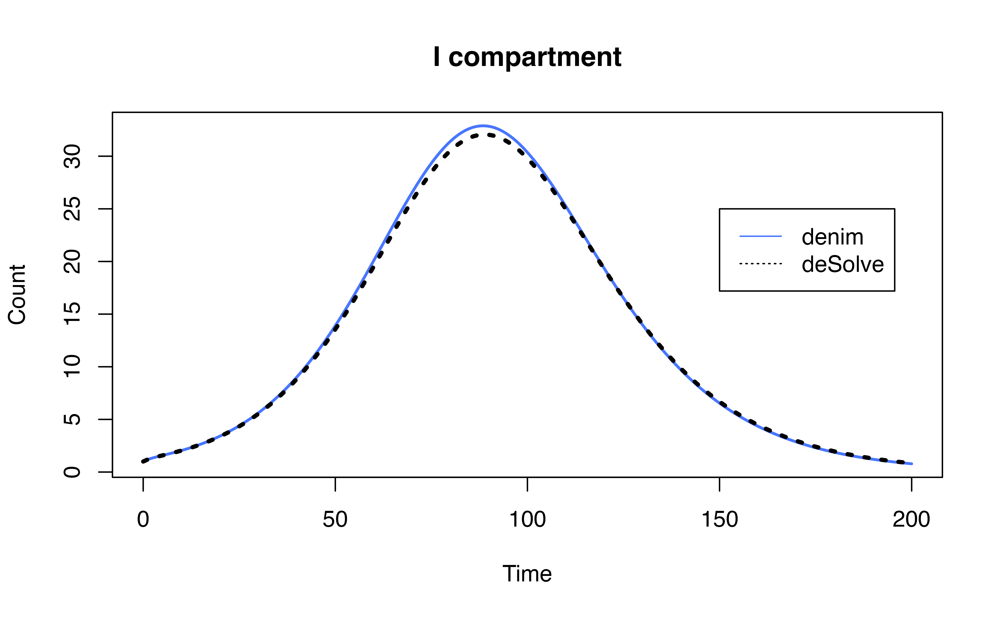
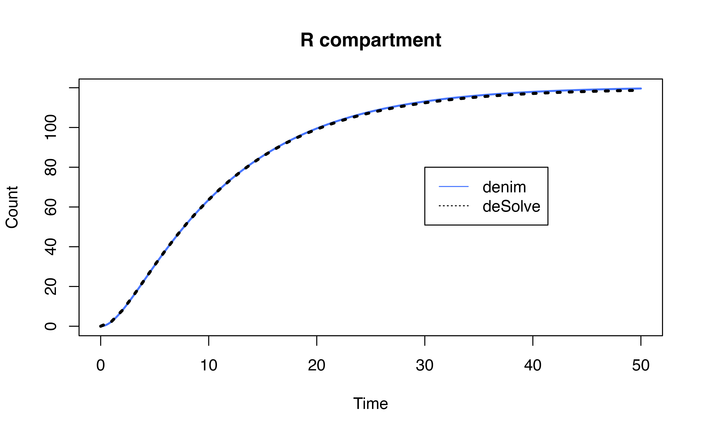

## Warning: package 'deSolve' was built under R version 4.3.11. Transition to multiple states in denim
Modelers may encounter many situations where individuals can transition from one compartment to multiple others, such as the SIRD model. There are 2 main approaches to handle this:
Model transitions as competing risks
Model as multinomial transition (outgoing population is split by a fixed proportion to transition to new compartments).
denim allows users to model both situations, while
requiring minimal change to the code base to switch between 2 methods of
modeling.
2. Multinomial in denim
2.1. Model definition
To specify the proportion that goes to each outgoing compartment, define the transition using the following syntax in model definition:
proportion * compartment -> out_compartment = [transition]
Note that the proportion here is the proportion of
compartment that will end up in
out_compartment at equilibrium.
Example: An SIRD model where 90% of infected can recover while the remaining 10% will die.
transitions <- denim_dsl({
S -> I = beta * S * (I / N) * timeStep
0.9 * I -> R = d_gamma(1/3, 2)
0.1 * I -> D = d_exponential(0.1)
})Mathematical formulation for the model
\[ \begin{cases} dS = -\beta S \frac{I}{N} \\ dIR_1 = 0.9 *\beta S \frac{I}{N} -\frac{1}{3}IR_1 \\ dIR_2 = \frac{1}{3}IR_1 - \frac{1}{3}IR_2 \\ dID = 0.1*\beta S \frac{I}{N} - 0.1*ID \\ dR = \frac{1}{3}IR_2 \\ dD = 0.1*ID \end{cases} \]
Proportion normalization
denim will automatically normalize the proportions if
they don’t sum up to 1.
Example 2: The following model definition is equivalent to the one in Example 1
transitions <- denim_dsl({
S -> I = beta * S * (I / N) * timeStep
36 * I -> R = d_gamma(1/3, 2)
4 * I -> D = d_exponential(0.1)
})2.2. Example model
To further demonstrate the implementation of multinomial in
denim, we provide the equivalent model implemented in
deSolve and compare the output of 2 implementations.
Model definition in denim
# model in denim
transitions <- denim_dsl({
S -> I = beta * S * (I / N) * timeStep
0.9 * I -> R = d_gamma(1/3, 2)
0.1 * I -> D = d_exponential(0.1)
})
denimInitialValues <- c(
S = 999,
I = 1,
R = 0,
D = 0
)Equivalent model definition in deSolve
# model in deSolve
transition_func <- function(t, state, param){
with(as.list( c(state, param) ), {
dS = - beta * S * (IR1 + IR2 + ID)/N
# apply linear chain trick for I -> R transition
# 0.9 * to specify prop of I that goes to I->R transition
dIR1 = 0.9 * beta * S * (IR1 + IR2 + ID)/N - rate*IR1
dIR2 = rate*IR1 - rate*IR2
dR = rate*IR2
# handle I -> D transition
# 0.1 * to specify prop of I that goes to I->D transition
dID = 0.1 * beta * S * (IR1 + IR2 + ID)/N - exp_rate*ID
dD = exp_rate*ID
list(c(dS, dIR1, dIR2, dID, dR, dD))
})
}
desolveInitialValues <- c(
S = 999,
# note that internally, denim also allocate initial value based on specified proportion
IR1 = 0.9,
IR2 = 0,
ID = 0.1,
R = 0,
D = 0
)Run simulation and compare
Model settings
parameters <- c(
beta = 0.2,
N = 1000,
rate = 1/3,
exp_rate = 0.1
)
simulationDuration <- 200
timeStep <- 0.05Run model
# --- run denim model ----
mod <- sim(transitions = transitions,
initialValues = denimInitialValues,
parameters = parameters,
simulationDuration = simulationDuration,
timeStep = timeStep)
# run deSolve model
times <- seq(0, simulationDuration)
ode_mod <- ode(y = desolveInitialValues, times = times, parms = parameters, func = transition_func)
ode_mod <- as.data.frame(ode_mod)
ode_mod$I<- rowSums(ode_mod[, c("IR1", "IR2", "ID")])Output Comparison

3. Competing risks in denim
3.1. Model definition
When there are multiple transitions from one compartment and no proportions are specified, denim will automatically treat these transitions as competing risks.
Example: the following model definition
will treat I->R and I->D as competing
risks.
3.2. Example model
To further demonstrate the implementation of competing risks in
denim, we provide the equivalent model implemented in
deSolve and compare the output of 2 implementations.
Equivalent model definition in deSolve
transition_func <- function(t, state, param){
with(as.list( c(state, param) ), {
dS = - beta * S * (I1 + I2 + IR + ID)/N
dI1 = beta * S * (I1 + I2 + IR + ID)/N - (rate+d_rate)*I1
dIR = rate*I1 - (d_rate + rate)*IR
dID = d_rate*I1 - (d_rate + rate)*ID
dI2 = d_rate*IR + rate*ID - (d_rate + rate)*I2
dR = rate*IR + rate*I2
dD = d_rate*ID + d_rate*I2
list(c(dS, dI1, dIR, dID, dI2, dR, dD))
})
}
desolveInitialValues <- c(
S = 950,
I1 = 50,
IR = 0,
ID = 0,
I2 = 0,
R = 0,
D = 0
)Run simulation and compare
Model settings
parameters <- c(
beta = 0.2,
N = 1000,
rate = 1/3,
d_rate = 1/4
)
simulationDuration <- 50
timeStep <- 0.05Run model
# run denim model
mod <- sim(transitions = transitions,
initialValues = denimInitialValues,
parameters = parameters,
simulationDuration = simulationDuration,
timeStep = timeStep)
# run deSolve model
times <- seq(0, simulationDuration)
ode_mod <- ode(y = desolveInitialValues, times = times, parms = parameters, func = transition_func)
ode_mod <- as.data.frame(ode_mod)
ode_mod$I <- rowSums(ode_mod[,c("I1", "ID", "IR", "I2")])